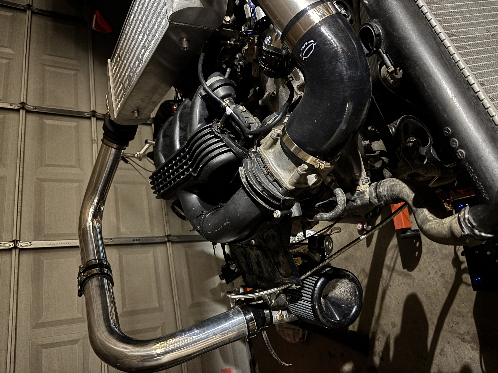
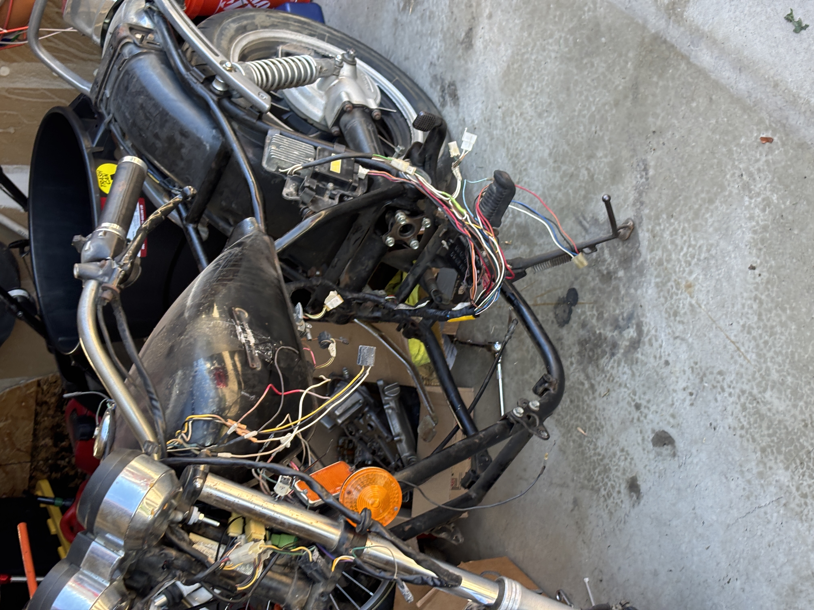
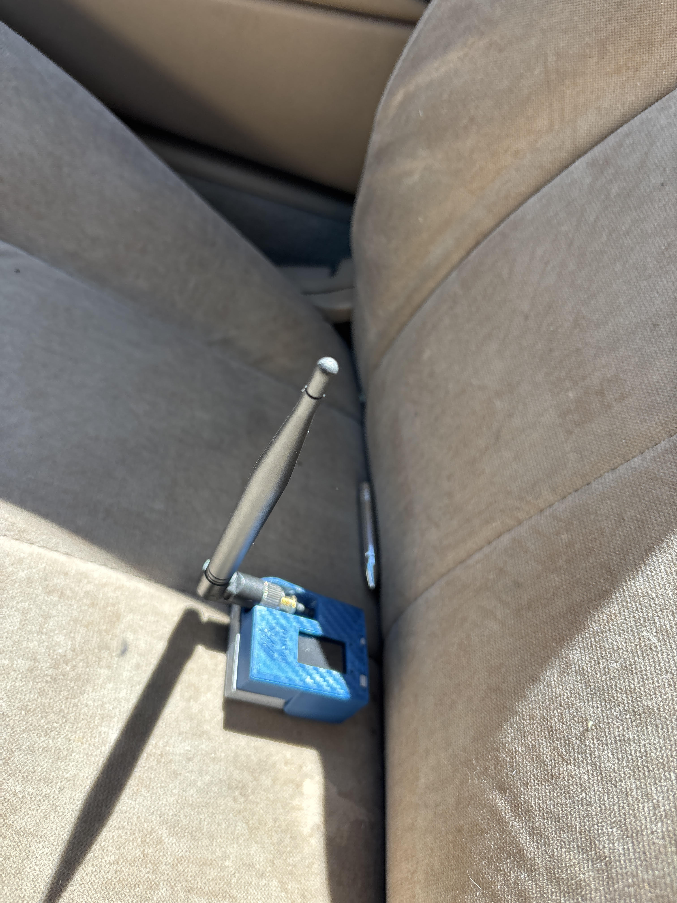

Projects

An engine I am building for a racecar. I am wiring and tuning it myself using open-source materials and hands-on testing.

A motorcycle I am restoring and rebuilding. I am manually rebuilding the engine and bringing the bike back to working condition.

A Meshtastic-based offline communication node I built to create a local mesh network for communication between friends without internet access.
Experience
-
Team Mentor at Becklar — supported team members, helped troubleshoot workflows, and improved communication between technical and non-technical users
-
Hands-on technical troubleshooting — diagnosed and resolved hardware/software issues in personal and lab environments
-
Systems familiarity — worked with operating systems, networking fundamentals, and basic security configurations in practice labs
- Independent learning — regularly practice cybersecurity concepts through labs, guided exercises, and system analysis